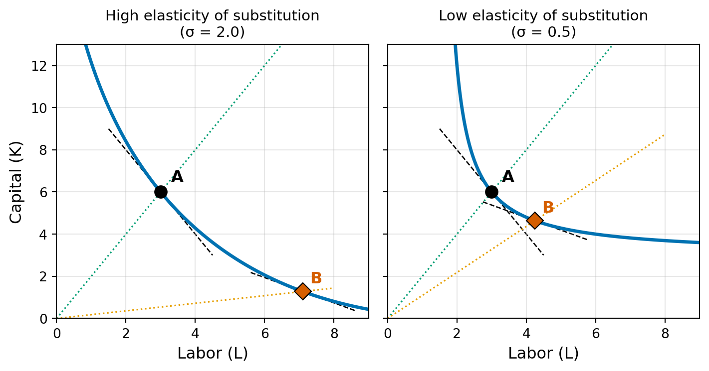

Case σ K/L at A MRTS at A K/L at B MRTS at B
High σ 2.0 2.0 2.0 0.18 0.6
Low σ 0.5 2.0 2.0 1.09 0.6Econ 502: Advanced Microeconomics
The Constant Elasticity of Substitution (CES) production function is given by:
\[F(K, L) = A\left[\alpha K^{\rho} + (1-\alpha) L^{\rho}\right]^{r/\rho}\]
where:
The elasticity of substitution (defined and derived below) is \(\sigma = \frac{1}{1-\rho}\). Note then \(\rho = \frac{\sigma-1}{\sigma}\), so sometimes CES function (for \(r=1\)) is also written as:
\[F(K, L) = A\left[\alpha K^{\frac{\sigma-1}{\sigma}} + (1-\alpha) L^{\frac{\sigma-1}{\sigma}}\right]^{\frac{\sigma}{\sigma-1}}\]
CES function nests several important special cases:
Scale all inputs by \(\lambda > 0\):
\[F(\lambda K, \lambda L) = A\left[\alpha (\lambda K)^{\rho} + (1-\alpha)(\lambda L)^{\rho}\right]^{r/\rho}\]
\[= A\left[\lambda^{\rho}\left(\alpha K^{\rho} + (1-\alpha) L^{\rho}\right)\right]^{r/\rho}\]
\[= \lambda^{r} \cdot A\left[\alpha K^{\rho} + (1-\alpha) L^{\rho}\right]^{r/\rho}\]
\[\boxed{F(\lambda K, \lambda L) = \lambda^{r} \cdot F(K,L)}\]
The function is homogeneous of degree \(r\): increasing returns if \(r > 1\), constant returns if \(r = 1\), and decreasing returns if \(r < 1\).
Let \(Z = \alpha K^{\rho} + (1-\alpha) L^{\rho}\) so that \(F = A Z^{r/\rho}\). By the chain rule:
\[MP_K = \frac{\partial F}{\partial K} = A \cdot \frac{r}{\rho} Z^{r/\rho - 1} \cdot \alpha \rho K^{\rho - 1} = A r \alpha K^{\rho-1} Z^{r/\rho - 1}\]
\[\boxed{MP_K = A r \alpha K^{\rho - 1}\left[\alpha K^{\rho} + (1-\alpha) L^{\rho}\right]^{r/\rho - 1}}\]
By symmetry \(MP_L = A r (1-\alpha) L^{\rho - 1} Z^{r/\rho - 1}\) or:
\[\boxed{MP_L = A r (1-\alpha) L^{\rho - 1}\left[\alpha K^{\rho} + (1-\alpha) L^{\rho}\right]^{r/\rho - 1}}\]
The MRTS is:
\[MRTS = \frac{MP_L}{MP_K} = \frac{A r (1-\alpha) L^{\rho - 1} Z^{r/\rho - 1}}{A r \alpha K^{\rho - 1} Z^{r/\rho - 1}}\]
Canceling common terms, we get:
\[\boxed{MRTS = \frac{1-\alpha}{\alpha}\left(\frac{L}{K}\right)^{\rho-1}}\]
The MRTS captures the rate at which the firm can substitute capital for labor while keeping output constant. For example, if \(MRTS = 2\), then the firm can can replace one unit of labor with two units of capital without changing output.
From the expression above, we can see that the MRTS at all input ratios is higher when:
Additionally, the capital units needed to substitute for one unit of labor increases as the input ratio \(K/L\) increases (power \(\rho-1\) is negative.)
The MRTS tells us the rate at which a firm can trade one input for another while maintaining the same output level, but it doesn’t tell us how responsive the firm’s input mix is to changes in that trade-off rate. In other words, MRTS captures the slope of the isoquant at a point, but it doesn’t tell us about the shape of the isoquant and how quickly the slope changes as we move along the isoquant. The elasticity of substitution captures this responsiveness.
In particular, the elasticity of substitution is defined as:
\[\sigma = \frac{d\ln(K/L)}{d\ln(MRTS)}\]
Remember changes in logs capture percentage changes (\(d\ln(x) = dx/x\)). Therefore, \(\sigma\) captures the percentage change in the input ratio for a given percentage change in the MRTS.

Case σ K/L at A MRTS at A K/L at B MRTS at B
High σ 2.0 2.0 2.0 0.18 0.6
Low σ 0.5 2.0 2.0 1.09 0.6In the above example, both isoquants start at point A with K/L = 2.0 and MRTS = 2.0. At point B, both have the same new MRTS of 0.6. So the change in the marginal rate is identical. But look at how differently the input mix responds. With high σ, K/L plummets from 2.0 to 0.18: the firm dramatically shifts toward labor. With low σ, K/L moves by much less, from 2.0 to 1.09.
To derive that \(\sigma = \frac{1}{1-\rho}\), we start by taking logs of the MRTS expression:
\[\ln(MRTS) = \ln\left(\frac{\alpha}{1-\alpha}\right) + (\rho - 1)\ln\left(\frac{L}{K}\right)\]
Plugging \(\ln(L/K) = -\ln(K/L)\) and total differentiating (\(\alpha\) and \(\rho\) are constants):
\[d\ln(MRTS) = (1 - \rho) \, d\ln(K/L)\]
Therefore:
\[\boxed{\sigma = \frac{1}{1-\rho}}\]
The elasticity of substitution is constant and it does not depend on input levels, which gives the CES function its name.
For constant returns to scale (\(r = 1\)), the firm minimizes the cost of producing output \(q\):
\[\min_{K, L} \quad wL + rK\]
subject to:
\[A\left[\alpha K^{\rho} + (1-\alpha) L^{\rho}\right]^{1/\rho} = q\]
where \(w\) is the wage and \(r\) is the rental rate of capital.
Setting \(MRTS = w/r\) (the price ratio):
\[\frac{1-\alpha}{\alpha}\left(\frac{L}{K}\right)^{\rho-1} = \frac{w}{r}\]
Solving for the optimal input ratio:
\[\frac{L}{K} = \left(\frac{\alpha}{1-\alpha} \cdot \frac{w}{r}\right)^{-\frac{1}{1-\rho}}\]
Or equivalently:
\[\boxed{\frac{K}{L} = \left(\frac{1-\alpha}{\alpha} \cdot \frac{r}{w}\right)^{-\frac{1}{1-\rho}} = \left(\frac{1-\alpha}{\alpha} \cdot \frac{r}{w}\right)^{-\sigma}}\]
This shows that \(\sigma\) directly governs how the input ratio responds to changes in relative factor prices.
In applied work, the log form of the above expression is often used for estimation:
\[\ln\left(\frac{K}{L}\right) = \underbrace{\sigma \ln\left(\frac{\alpha}{1-\alpha}\right)}_{\text{Constant}} - \sigma \ln\left(\frac{r}{w}\right)\]
So regressing log of relative input use on log of relative factor prices yields an estimate of the elasticity of substitution \(\sigma\).
This shows that we can also express the elasticity of substitution as:
\[\sigma = \frac{d\ln(K/L)}{d\ln(r/w)}\]
where \(K/L\) is the equilibrium input ratio because in equilibrium \(MRTS = w/r\). So another way to interpret \(\sigma\) is that it captures the percentage change in the input ratio for a given percentage change in relative factor prices.
Substituting the optimal ratio back into the production constraint yields the conditional factor demands. In particular, from the optimal ratio we have \(K = L \cdot \left(\frac{1-\alpha}{\alpha} \cdot \frac{r}{w}\right)^{\frac{1}{\rho-1}}\), so we can write the production constraint as:
\[A\left[\alpha \left(L \cdot \left(\frac{1-\alpha}{\alpha} \cdot \frac{r}{w}\right)^{\frac{1}{\rho-1}}\right)^{\rho} + (1-\alpha) L^{\rho}\right]^{1/\rho} = q\]
Rearranging and solving for \(L\): \[L(w, r, q) = \frac{q}{A}\left[\alpha \left(\frac{1-\alpha}{\alpha} \cdot \frac{r}{w}\right)^{\frac{\rho}{\rho-1}} + (1-\alpha)\right]^{-\frac{1}{\rho}}\]
Taking common denominator for the term inside the square brackets: \[L(w, r, q) = \frac{q(\alpha w)^{\frac{1}{\rho-1}}}{A}\left[\alpha((1-\alpha)r)^{\frac{\rho}{\rho-1}} + (1-\alpha)(\alpha w)^{\frac{\rho}{\rho-1}}\right]^{-\frac{1}{\rho}}\]
Factoring out \(\alpha(1-\alpha)\) inside the square brackets (note coming out from the brackets it will have power \(-1/\rho\))
\[L(w, r, q) = \frac{q(\alpha w)^{\frac{1}{\rho-1}}}{A(\alpha(1-\alpha))^{1/\rho}}\left[(1-\alpha)^{\frac{1}{\rho-1}}r^{\frac{\rho}{\rho-1}} + \alpha^{\frac{1}{\rho-1}} w^{\frac{\rho}{\rho-1}}\right]^{-\frac{1}{\rho}}\]
Now noting \(K = L \cdot \left(\frac{1-\alpha}{\alpha} \cdot \frac{r}{w}\right)^{\frac{1}{\rho-1}}\), we can write the conditional demand for capital as:
\[K(w, r, q) = \frac{q((1-\alpha)r)^{\frac{1}{\rho-1}}}{A(\alpha(1-\alpha))^{1/\rho}}\left[(1-\alpha)^{\frac{1}{\rho-1}}r^{\frac{\rho}{\rho-1}} + \alpha^{\frac{1}{\rho-1}} w^{\frac{\rho}{\rho-1}}\right]^{-\frac{1}{\rho}}\]
The cost function is the minimum cost of producing output \(q\) given factor prices:
\[C(w, r, q) = wL(w, r, q) + rK(w, r, q)\]
Plugging in the expressions for \(L(w, r, q)\) and \(K(w, r, q)\):
\[C(w, r, q) = \frac{q}{A(\alpha(1-\alpha))^{1/\rho}}\left[(1-\alpha)^{\frac{1}{\rho-1}}r^{\frac{\rho}{\rho-1}} + \alpha^{\frac{1}{\rho-1}} w^{\frac{\rho}{\rho-1}}\right]^{-\frac{1}{\rho}} X\]
where \[ X = w(\alpha w)^{\frac{1}{\rho-1}} + r((1-\alpha)r)^{\frac{1}{\rho-1}}\]
Which is the same as the term inside the square brackets, so we can simplify to:
\[\boxed{C(w, r, q) = \frac{q}{A(\alpha(1-\alpha))^{1/\rho}}\left[(1-\alpha)^{\frac{1}{\rho-1}}r^{\frac{\rho}{\rho-1}} + \alpha^{\frac{1}{\rho-1}} w^{\frac{\rho}{\rho-1}}\right]^{\frac{\rho-1}{\rho}}}\]
Interestingly, the cost function also has a CES form in factor prices, but with elasticity of substitution \(\rho\).